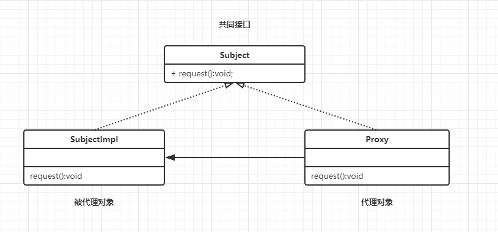

动态代理是Java语言中非常经典的一种设计模式，也是所有设计模式中最难理解的一种。
代理
在了解动态代理之前我们先了解一下什么叫代理。
什么是代理
字面意思：代为处理。比如说，上大学的时候，准备逃课，这时候给朋友说，如果点名的话记得帮我答到。而这时候朋友，就是你的一个代理。（代替你答到）
程序中代理的方式有几种？
- 静态代理
- 动态代理
- cglib代理
静态代理
条件：静态代理在使用时，需要定义接口或者父类，被代理对象和代理对象一起实现相同的接口或者是继承相同的父类。

实现代码如下：
1 | // 接口类 |
以上静态代理基本流程。
Q：为什么要这么做？直接写进代码里不好吗？
A：为了不破坏原来的代码情况下，我们进行了代码增强（开闭原则）。如果需要增强的方法过多时候，挨着修改过于麻烦。
静态代理优缺点总结：
优点：在不修改目标对象的功能前提下，能通过代理对象对被代理对象功能扩展。
缺点：
因为代理对象需要与目标对象实现一样的接口，所以会有很多代理。一旦接口增加方法，被代理对象和代理对象都要维护。
代理对象只服务于一种类型的对象，如果要服务多类型的对象。势必要为每一种对象都进行代理，静态代理在程序规模稍大时就无法胜任了。
动态代理
根据如上的介绍，你会发现每个代理类只能为一个接口服务，这样程序开发中必然会产生许多的代理类
所以我们就会想办法可以通过一个代理类完成全部的代理功能，那么我们就需要用动态代理。
条件：代理对象不需要实现接口，被代理对象依旧需要实现接口，否则不能用动态代理。
代理对象的生成是利用JDK的API，动态的在内存中生成对象。Java中一个代理类 java.lang.reflect.Proxy 注意是 reflect 包下切记别选错了。JDK实现代理只需要使用此包下的newProxyInstance。
实现代码如下：
1 | // Proxy 在java.lang.reflect.Proxy 别记错了 |
上面这一段最大的疑惑应该是 newProxyInstance，为什么我们需要它？它的参数怎么又这么复杂？
接下来就是一步步分析这个方法：
1 | //CLassLoader loader:类的加载器 |
类属性是固定的，所以我们
A：
CLassLoader ：类的加载器顾名思义，用于类加载的。
Class<?> interfaces:得到全部的接口，这个也通俗易懂，得到接口就变相的知道实现方法。
InvocationHandler：这个是什么？其实他是一个接口，下面就来看看长什么样。
1 | //Object proxy:被代理的对象 |
三个参数：Object proxy:被代理的对象 、Method method:要调用的方法 和Object[] args:方法调用时所需要参数 。
Object[] args方法调用的时所需要的参数？什么参数？哪里来的？
其实这个参数就是
1 | public class Main { |
看到这里应该，对流程就有了一个大致了解。但是一定很疑惑？我感觉什么都没做就完了？
Q：newProxyInstance到底做了什么？
A：返回一个Object对象返回一个便于操作的代理对象。
Q：newProxyInstance用来返回代理对象，那InvocationHandler接口有啥用？
A：其实真正的操作都是通过这个接口来实现的。
对比起静态代理，你会发现动态代理简直是黑魔法，静态代理很明显的就看出来是人为的传参，在内部手动调用。到了动态代理却只调用一个静态方法在实现一个接口就完了？
这时可能候
在静态代理中只能一个个添加属性来扩展能代理的范围，这样就过于死板。
在动态代理中只需要你编写一次，然后传入你需要代理的对象，它会返回一个代理对象供你使用。
那么它的关键点在于动态，那它哪里动态了呢？
其实它动态的地方许多，首先你传入的对象，它会动态的生成代理类并编译成字节码文件，然后动态的加载进内存，最后动态的利用反射来调用你所需要的方法。以上的步骤都是在我们没有感知的情况下完成的。所以他很‘动态’。